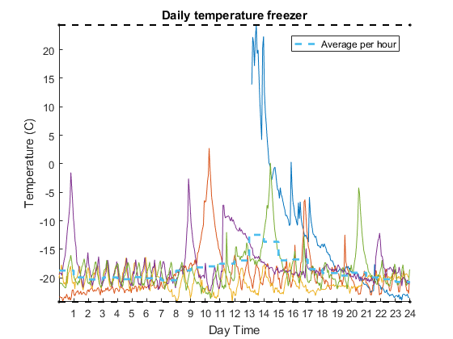
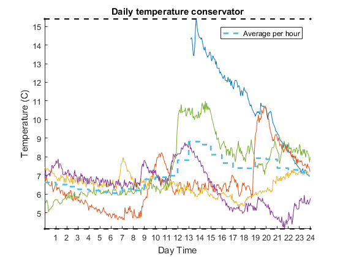
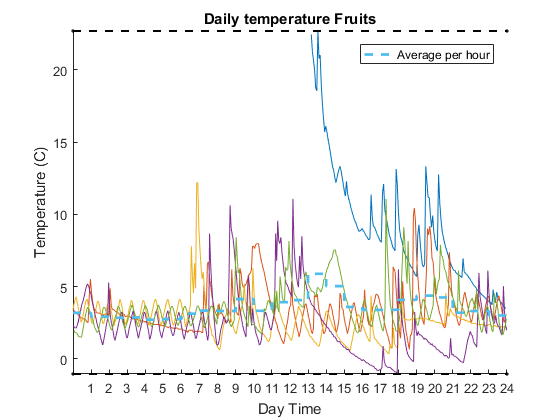
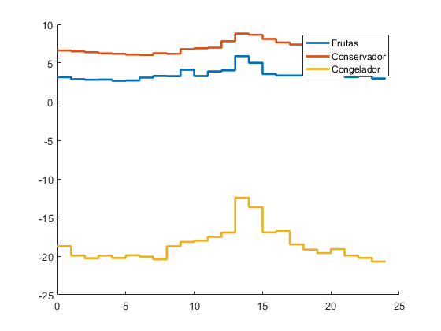
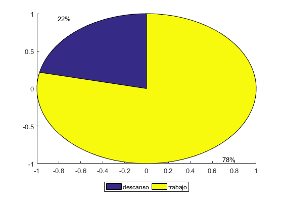
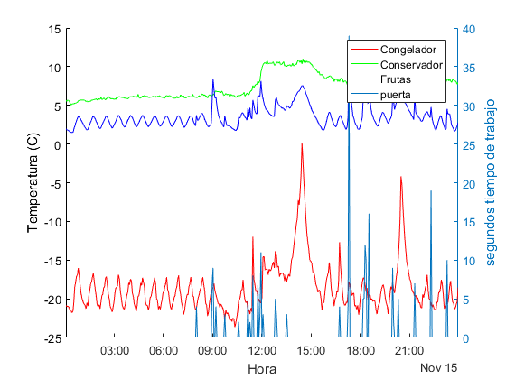
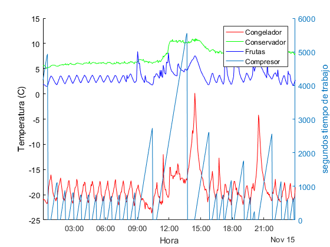
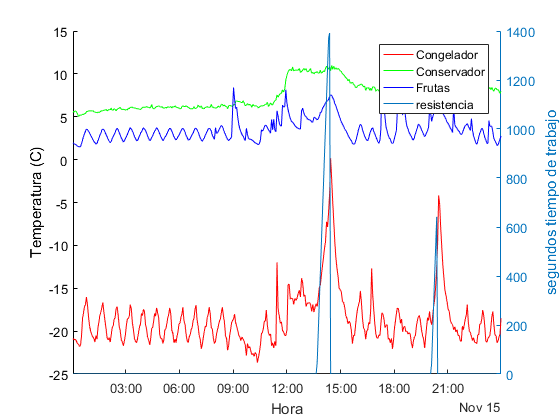
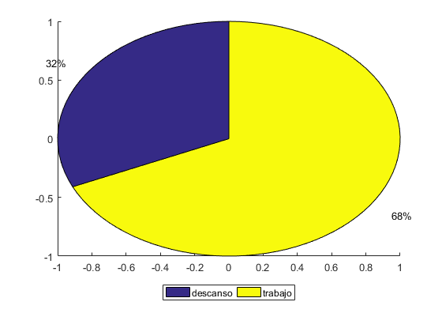

Contents
Temperaturas en Congelador
Temperatura promedio en congelador -19.1221 °C

Temperaturas en Conservador
Temperatura promedio en conservador 7.0636 °C

Temperaturas en Conservador zona Frutas
Temperatura promedio en compartimento de frutas 3.3223 °C

Promedios Totales

Diagrama en torta de trabajo compresor

Consolidado del día anterior
Comparación de temperaturas con apertura de puertas

Comparación de temperaturas con trabajo de compresor

Comparación de temperaturas con resistencia de descongelamiento

Porcentaje de trabajo Compresor
